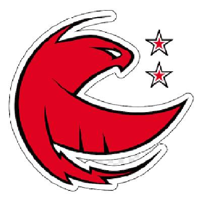
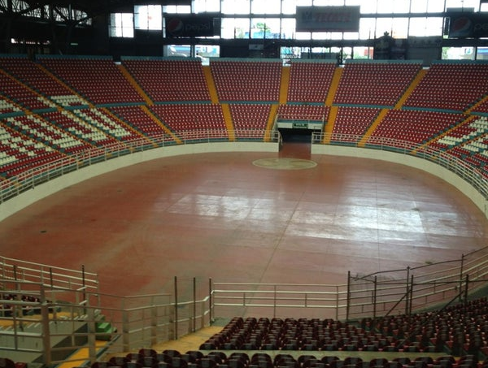

CNMB
| Escudo |
|---|
|  |
| Datos |
| Nombre: Halcones de Veracruz A o de Fundacion: 2001 Ciudad: Veracruz, Veracruz Estadio: Auditorio Benito Juárez Capacidad: 3,466(?) Sitio web: https://web.archive.org/web/20140517110348/http://gigantesmexico.com/ |
| Historia |
|
En el año de 2005 se funda el equipo de los Halcones de la Universidad Veracruzana el cual fue renombrado con el nombre de los Halcones Rojos, durante la existencia del equipo obtuvieron dos titulos de la LNBP en las temporadas 2011-2012 y 2013-14 ademas de un segundo lugar de la Copa Independencia 2007-2008. En 2016 el equipo desaparece debido a problemas financieros y constantes bajas de varios jugadores del equipo. |
| Estadio |
|  |